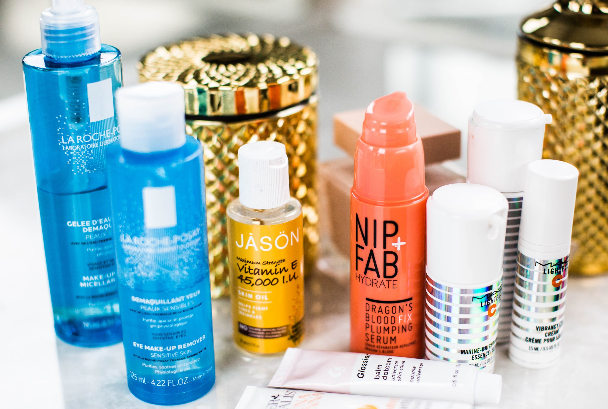
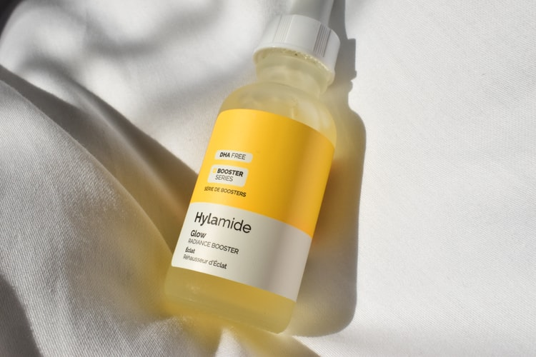

5 pasos para la limpieza de tu rostro
Si eres fiel a tu rutina de limpieza facial podrás retrasar la aparición de las arrugas, prevenir el envejecimiento prematuro y evitar los enrojecimientos.
1. Desmaquíllate
Quitarte el maquillaje todos los días es quizá la tarea más importante que debes hacer para tener un cutis limpio. Recuerda que dormir con maquillaje acelera el envejecimiento, abre los poros, causa puntos negros y favorece la aparición de arrugas y acné.
2. Lava tu rostro
Lavar tu rostro dos veces al día es la clave para tener un cutis más limpio. Recuerda que el ambiente está lleno de bacterias que penetran en tu piel a través de los poros, y si a esto sumamos las capas de maquillaje podemos decir que al final del día el rostro es portador de muchos gérmenes.
3. Exfolia
Para limpiar el cutis es necesario aplicarte un exfoliante una vez a la semana. Esto te permitirá eliminar células muertas, la grasa, el sucio acumulado por la contaminación y residuos de maquillaje. Cuando exfolias tu piel, ésta respira y absorbe mejor los nutrientes de cremas y productos antienvejecimiento.
4. Hidrata
Hidratar la piel permite que el cutis luzca terso, suave y previene los enrojecimientos y las arrugas. Todos los días, antes de maquillarte y antes de acostarte, aplica crema hidratante con la punta de tus dedos, dando suaves golpecitos y extiendo el producto por todo el rostro.
5. Cremas antienvejecimiento
Toda mujer a partir de los 25 años debe comenzar a utilizar cremas antiarrugas. Recuerda que la piel que rodea a los ojos es muy delicada, por lo que debes usar un contorno de ojos para evitar la aparición de arrugas en esta zona y ofrecerle la hidratación que necesita.
- 
-

- 